Fit in Wassenaar is het preventie-programma van de gemeente Wassenaar dat inwoners, sportverenigingen, scholen en zorgaanbieders verbindt rond één doel: een gezond en gelukkig leven voor iedereen. Voor dit programma zijn we sinds 2023 doorlopend creatief partner — van merk en strategie tot platform, video, persfotografie en uitvoering.
Het hart van het werk is een centraal online platform waar Wassenaarders hun weg vinden naar sport, beweging, ondersteuning en mentale gezondheid. Een grote database die het complete lokale aanbod ontsluit — voor inwoners én voor organisaties die willen aansluiten.
Fit in Wassenaar — Mini Docu
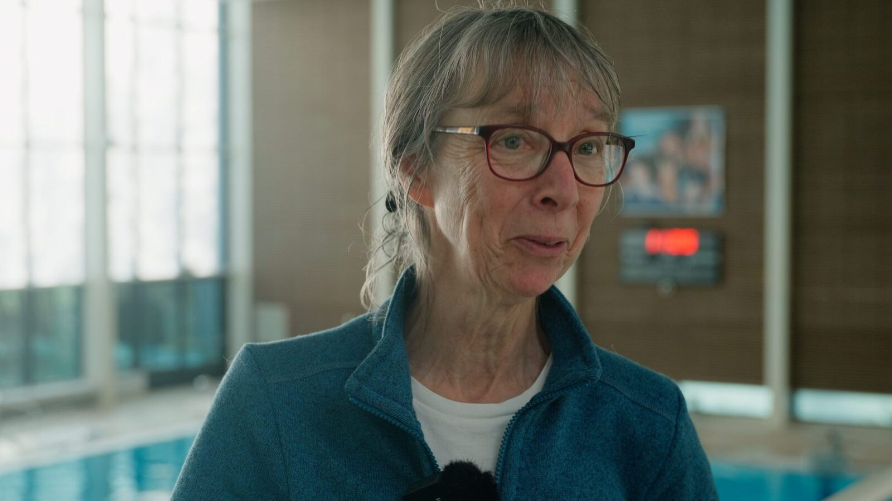
fitwassenaar.nl — het centrale platform. Inwoners zochten overzicht, de gemeente wilde verbinden — wij bouwden de brug. Een interactieve database waarmee Wassenaarders zelf ontdekken wat er voor hen te doen is: van sport en beweging tot begeleiding en zorg. Alles op een interactieve kaart, gefilterd op programma, doelgroep en aanbod.
Gebouwd als maatwerk-oplossing in een gebruiksvriendelijk CMS. Organisaties beheren hun eigen profiel, het aanbod groeit organisch, en alles is doorzoekbaar voor de inwoner die op zoek is naar passende beweging, hulp of een sportvereniging in de buurt.
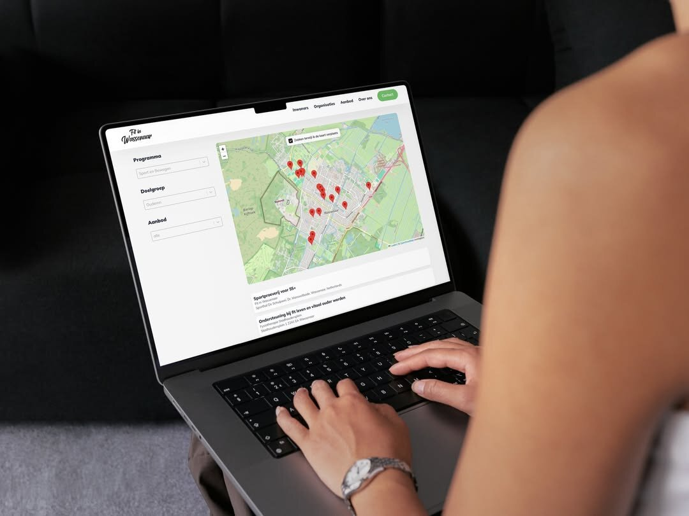
65+'ers in beweging — campagne-video
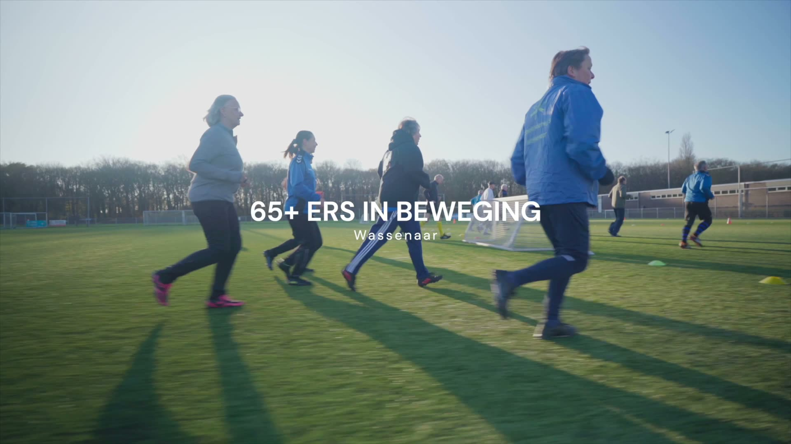
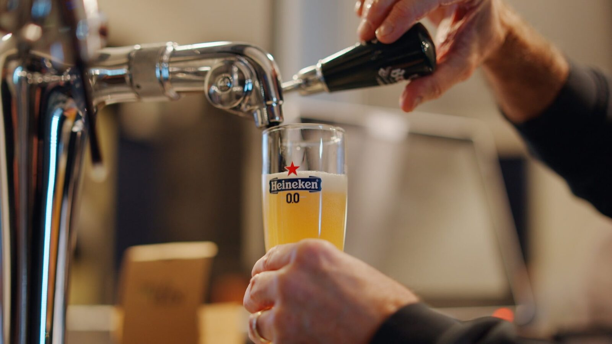
Lentedag 2025 — aftermovie
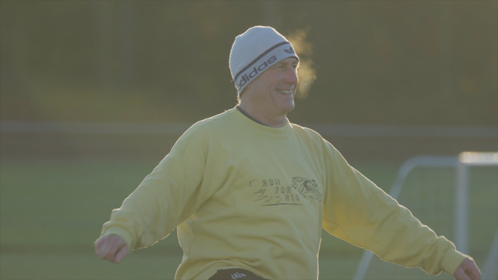
PR-activatie: 1.592.298 stappen. Op 19 en 20 maart 2026 trapte Wassenaar zijn rol als JOGG-gemeente af met een tweedaagse buitensport-estafette. Concept, campagne-design, persaanpak, fotografie en filmproductie: Sircle. De vraag: bouw een actie die het vorig-jaar-record (704.709 stappen, St. Bonifaciusschool) zou breken én de regionale pers haalt. Resultaat: ruim 1,5 miljoen stappen — bijna verdubbeld — en coverage bij NPO Zapp Jeugdjournaal, Omroep West, AD Regio Wassenaar, Centraal+ en De Wassenaarder.
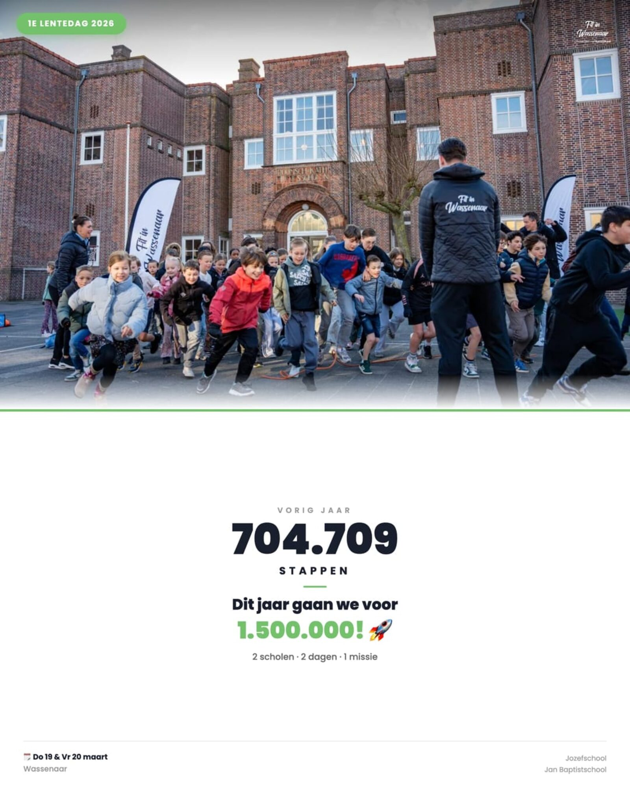
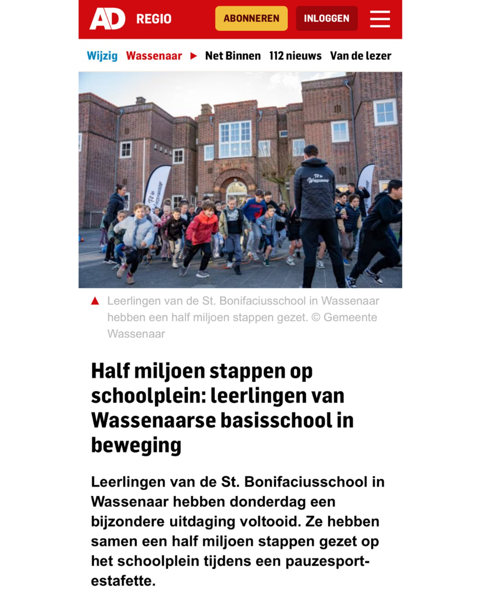
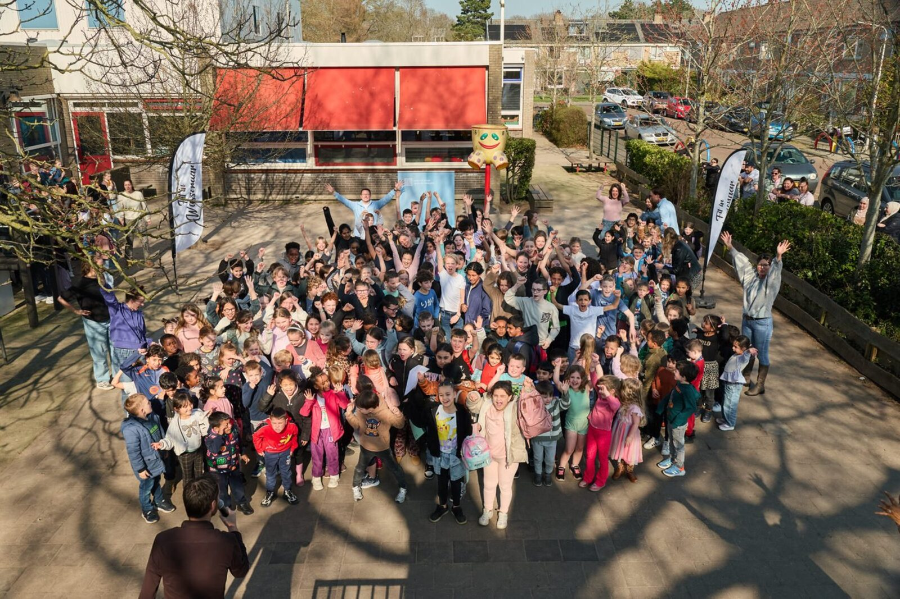
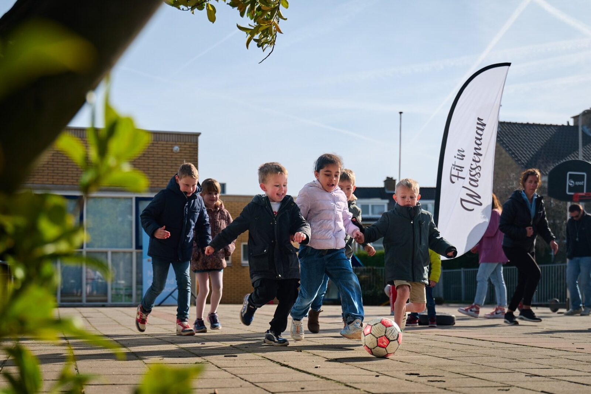
Educatieve animaties — Kansrijke Start. Korte 2D-animaties die ouders meenemen in de ontwikkeling van het jonge kind. On-brand, in een vriendelijke beeldtaal, gemaakt om los te delen via social én ingebed in de site bij de bijbehorende stroomschema's.
Mondmotoriek — animatie
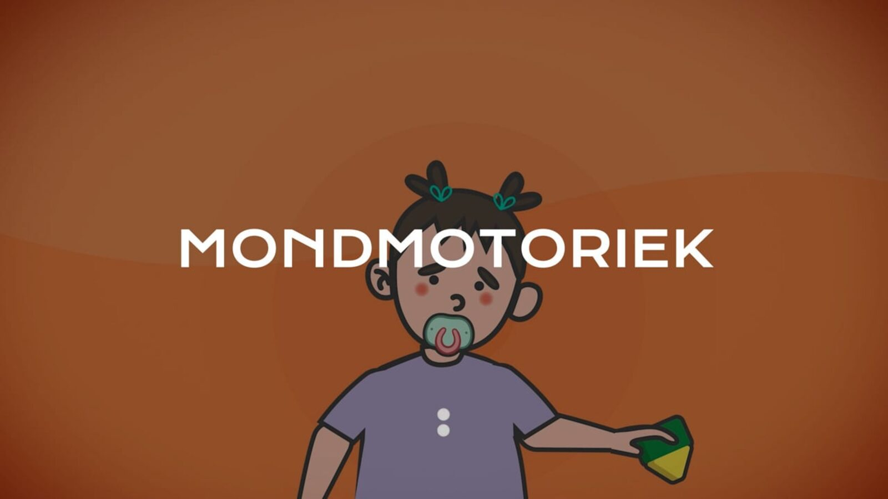
Taalvaardigheid — animatie
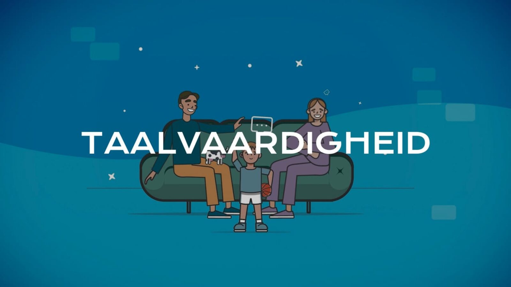
Wat we leveren
Productie: sircle.agency · In opdracht van de gemeente Wassenaar / programma Fit in Wassenaar · Doorlopende samenwerking sinds 2023